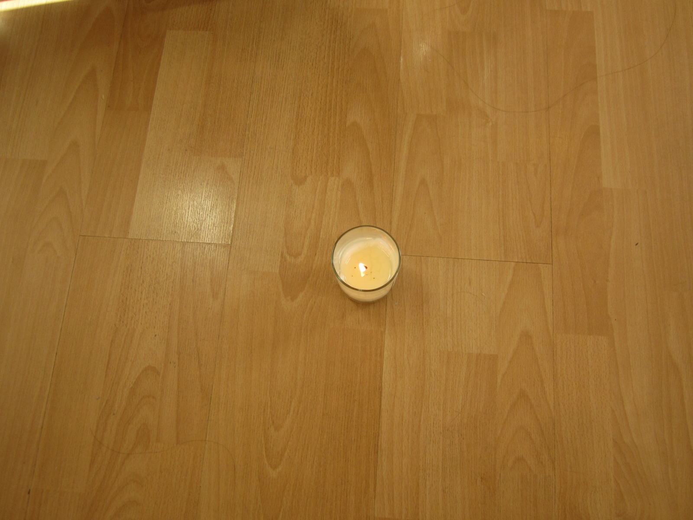
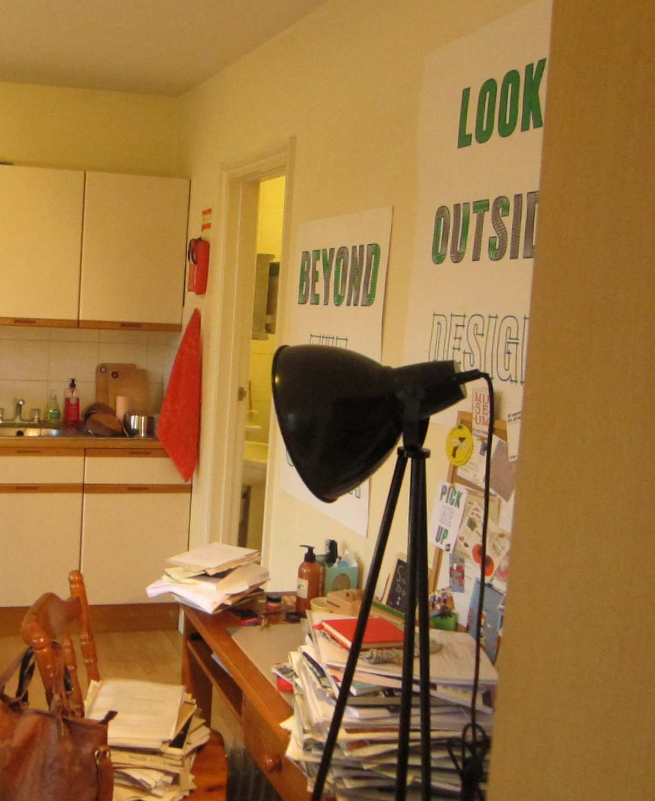

Describing the Sensory Environment
C was someone who devoted much attention to creating an ideal home environment. When I paid the first visit to the flat, the living room was basking in the yellowish afternoon sun. The air was suffused with light fragrance generated by a burning candle placed on the wood floor. The heater was on, so the space felt warm and cozy.

By the time I paid my final visit, I noticed that the location of where the candle usually was had changed. C explained that a small fire broke out in one of her neighbors' flat the night before. While there was no casualty and the fire was distinguished immediately, her flat had smells of smoke. Consequently she placed the candle in the middle of the living room to disperse the burnt smell.
Instruments Not Used in Ethnography
It is difficult to describe the atmosphere of a place with only words and pictures. Pink and Moroşanu (2015)1 argue that video tour with the participants in their homes can better capture the sensory dimension of the domestic environment.
Nevertheless, I decided not to propose this suggestion to C. I was introduced to her by a mutual friend, so I felt that creating a video recording of her home would have been out of bounds. In addition, even though videos can provide more modes of engagement for the audience, it is still not possible to elucidate the smell of the place, which had been a compelling sensation I picked up during my visits.
The Visual Impact of Photos
Having studied visual culture before, C designed the interior space with care. Her home hence was aesthetically pleasant. In spite of my limited skills and old camera model, in the end I felt that the photos can convey the appearance of the space, further eliminating the need to use video recording.

Pink, S., Leder Mackley, K., & Morosanu, R. (2015). Researching in atmospheres: Video and the 'feel' of the mundane. Visual Communication, 14(3), 351-369. ↩